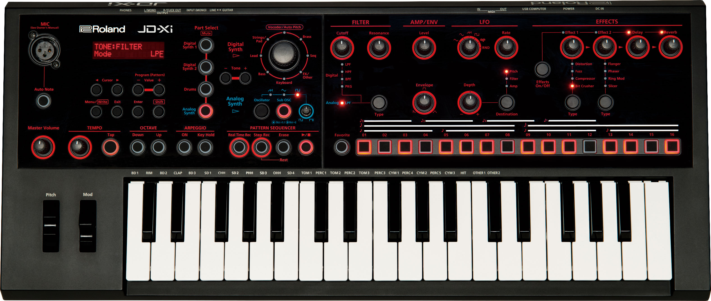

JD-Xi
Tutorial Hub
Choose a guided path or jump into any skill.
Learn in order
Follow the recommended path step-by-step.
Learn a la carte
Explore any topic you want, anytime.

Sound select
Knobs & controls
Effects
Step buttons
Keys
VISUAL DEMO
1. Guided learning path
Recommended order
2. Explore by topic
Learn a la carte
Recommended path
Your step-by-step roadmap
A clear path from first sound to full performance.
1
⚑
Start hereMeet the JD-Xi
and get set up.
2
☷
Pick soundsFind and select
your first sounds.
3
♫
Play notesUse the keys
and play.
4
◉
Shape soundAdjust filters,
envelopes, controls.
5
☷
Learn menusNavigate menus
with confidence.
6
▦
Make a beatUse patterns and
build a groove.
7
☆
Build a full patchCreate, save and
perform your patch.